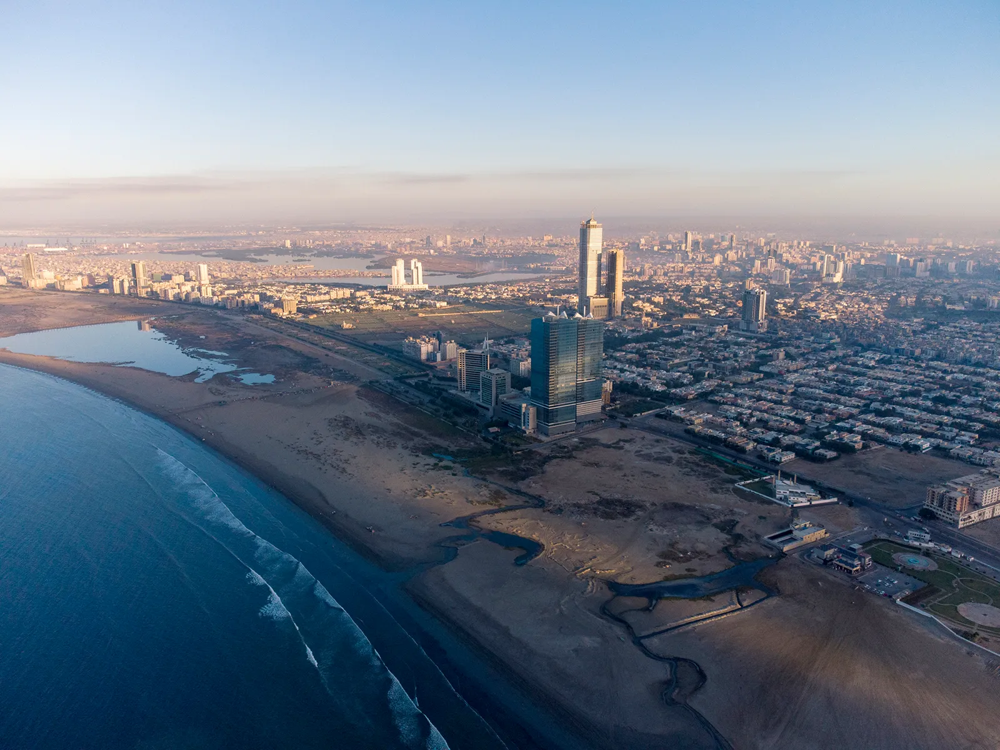
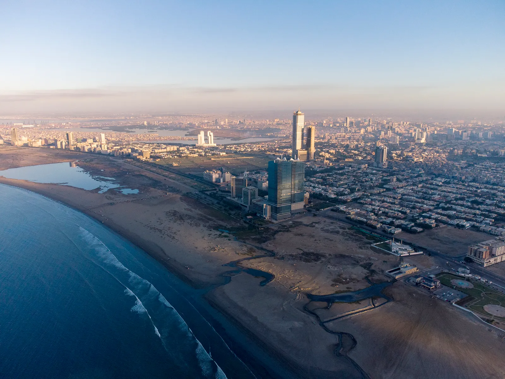

A shot in which the subject is photographed by an encircling or moving camera A shot in which the subject is photographed by an encircling or moving cameraA shot in which the subject is photographed by an encircling or moving cameraA shot in which the subject is photographed by an encircling or moving cameraA shot in which the subject is photographed by an encircling or moving cameraA shot in which the subject is photographed by an encircling or moving cameraA shot in which the subject is photographed by an encircling or moving camera
A brief, intervening film scene or sequence, not specifically tied to the plot, that appears within a film A brief, intervening film scene or sequence, not specifically tied to the plot, that appears within a filmA brief, intervening film scene or sequence, not specifically tied to the plot, that appears within a filmA brief, intervening film scene or sequence, not specifically tied to the plot, that appears within a filmA brief, intervening film scene or sequence, not specifically tied to the plot, that appears within a filmA brief, intervening film scene or sequence, not specifically tied to the plot, that appears within a filmA brief, intervening film scene or sequence, not specifically tied to the plot, that appears within a filmA brief, intervening film scene or sequence, not specifically tied to the plot, that appears within a filmA brief, intervening film scene or sequence, not specifically tied to the plot, that appears within a film
A speech, preface, introduction, or brief scene preceding the the main action or plot of a film; contrast to epilogue A speech, preface, introduction, or brief scene preceding the the main action or plot of a film; contrast to epilogueA speech, preface, introduction, or brief scene preceding the the main action or plot of a film; contrast to epilogueA speech, preface, introduction, or brief scene preceding the the main action or plot of a film; contrast to epilogueA speech, preface, introduction, or brief scene preceding the the main action or plot of a film; contrast to epilogueA speech, preface, introduction, or brief scene preceding the the main action or plot of a film; contrast to epilogueA speech, preface, introduction, or brief scene preceding the the main action or plot of a film; contrast to epilogueA speech, preface, introduction, or brief scene preceding the the main action or plot of a film; contrast to epilogueA speech, preface, introduction, or brief scene preceding the the main action or plot of a film; contrast to epilogue